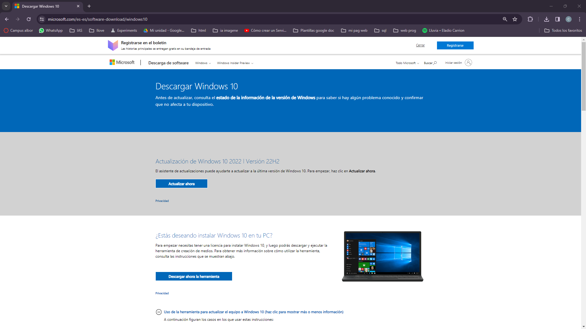
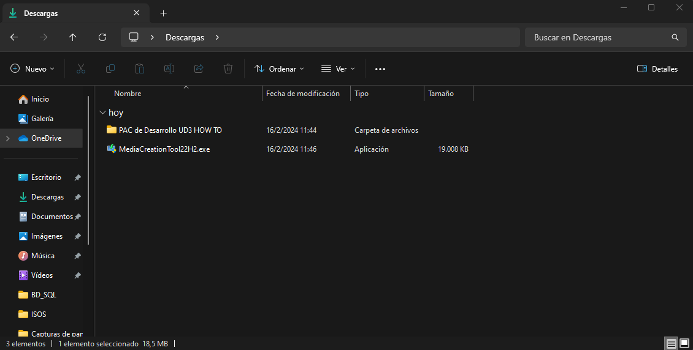
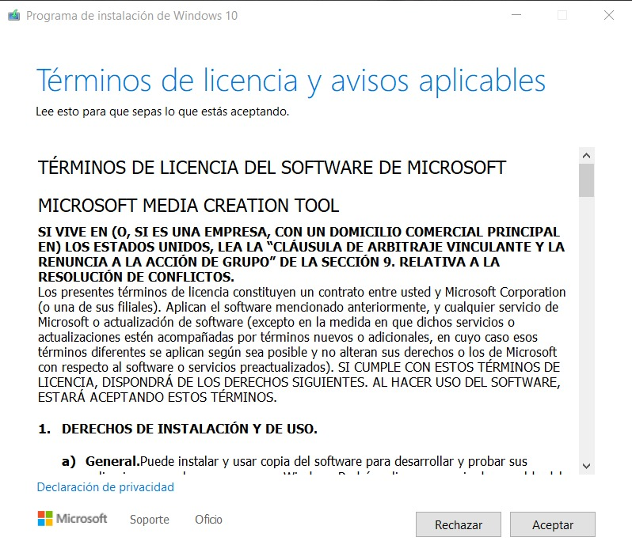
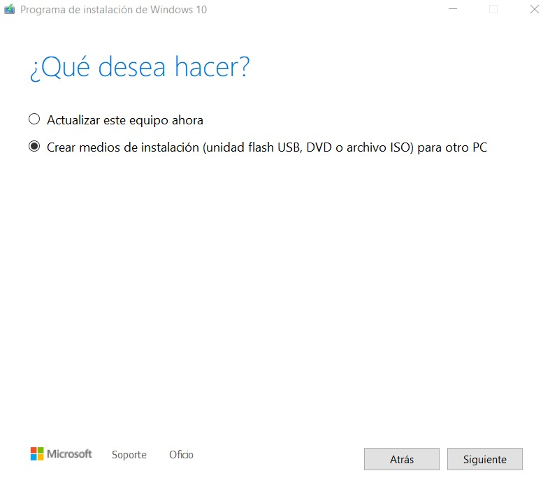
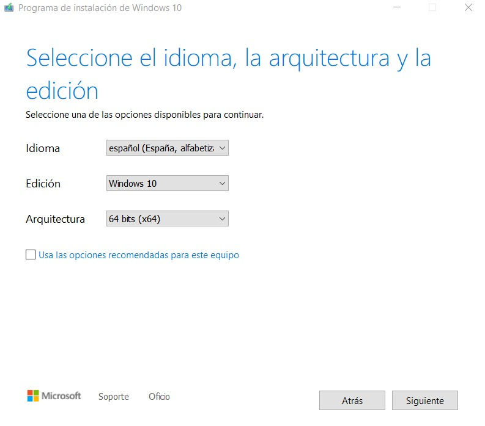
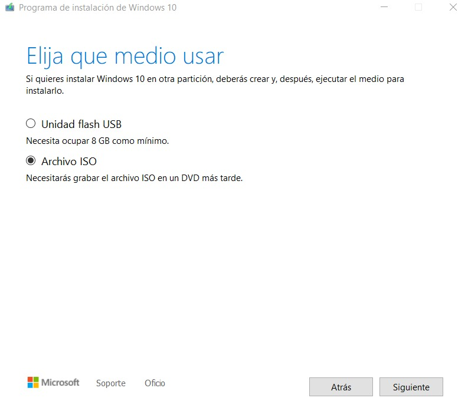
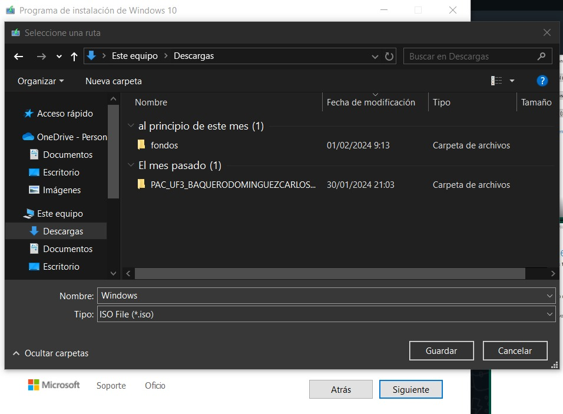
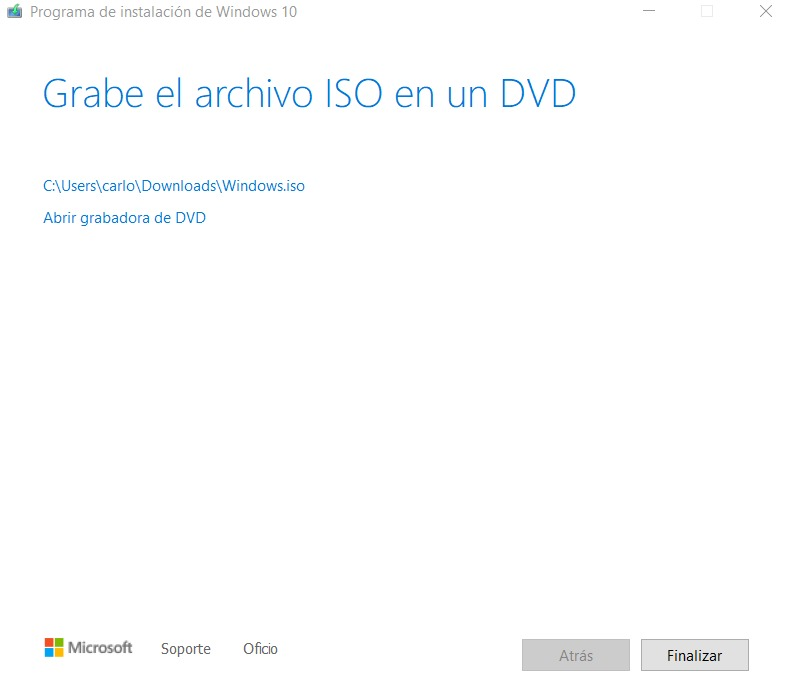

HOW TO ISO WINDOWS10
Lo primero es ir a la pagina oficial de windows para decargar el ejecutable con el que se puede conseguir la ISO de windows 10. Pagina oficial: https://www.microsoft.com/es-es/software-download/windows10 . En esta pagina hay que clickear en descargar la herramienta para descargar el ejecutable.
Aparecera en descarga el ejecutable llamado "MediaCreationTool22H2.exe" descargado,una vez localizado se abre
Siga los siguientes pasos para la descarga del ISO de windows:
-
Lo primero es darle a aceptar.
 -
Luego se le da a siguiente.
 -
Despues seleccionas tu idioma, la edicion del ISO en este caso es
Windows 10 y por ultimo la arquitectura de tu equipo en mi caso de
64 bits.
 -
Mas tarde se selecciona archivo ISO para que cree el ISO.
 -
Se selecciona la direccion donde se quiera descargar.
 -
Por ultimo se espera a que finalice de descargar y se le da a
finalizar y ya estara la ISO guardada en la dirección seleccionada
anteriormente.
